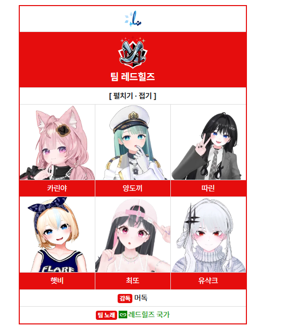
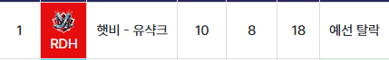
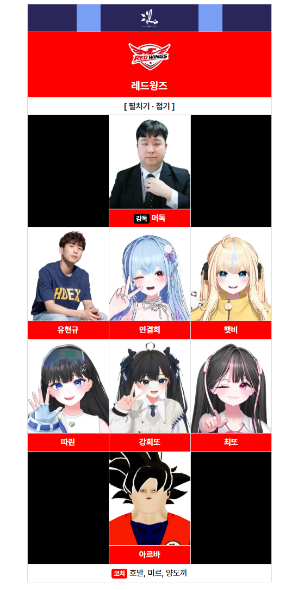

동메달
봅슬레이 · 탑승자
양도끼 · 따린 · 햇비 · 유샥크
예선
포인트 컬링
햇비 · 유샥크 2인팀 / 10 : 8 · 합계 18


 타요 스타포스
타요 스타포스
릴파동계스포츠대회

양도끼 · 따린 · 햇비 · 유샥크
햇비 · 유샥크 2인팀 / 10 : 8 · 합계 18


햇비
햇비 · 민결희 2인팀
아직 기록된 경기가 없습니다.
| 경기 | 상대 | AB | H | RBI | AVG | SLG | 수비 |
|---|